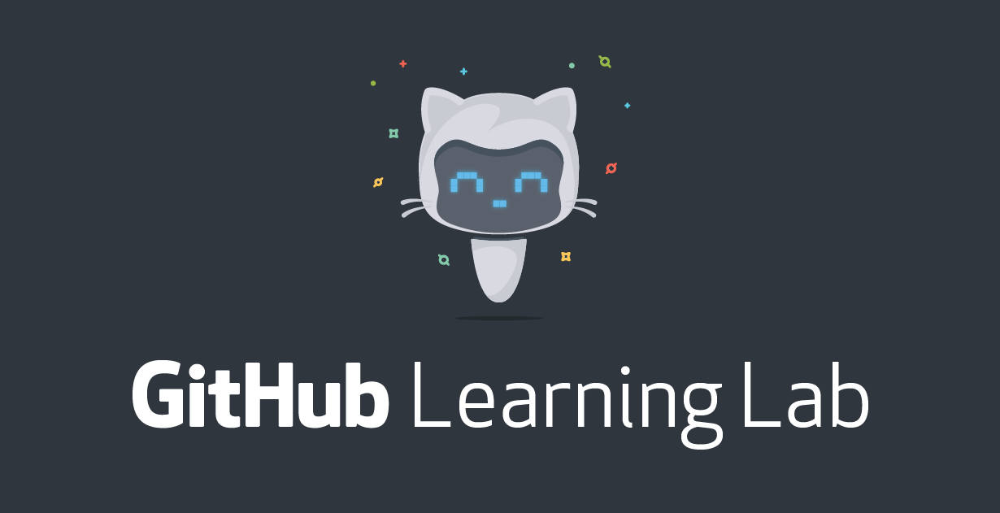

Git'n Going
This assignment had me complete 8 GitHub Learning Lab courses in order to learn about GitHub and version control. I was able to learn about workflow and the one that GitHub provides as well as the uses of version control.
Impact on Me as a Student
This assignment had a good impact on me because it introduced me to the idea of version control and keeping track of code using GitHub. I learned about the different aspects of GitHub such as commits, issues and pull requests and their uses in coding as a group. I was introduced to the workflow that GitHub provides that is especially useful in group scenarios as it allows people to work on different aspects of the code without affecting the main program or others' code. I also learned how to use GitHub for other purposes such as hosting a website or making a slide deck which showed me that GitHub can be used for several things and not just for version control.
How Will I use this to Continue Learning?
I will continue to use GitHub and version control to manage my work and to keep things organized when coding. When applicable, I will continue to use the workflow that GitHub provides in order to git things going (See what I did there). In a broader aspect, the purpose of version control is to keep track of work and manage changes and edits and this purpose is something I can apply to other fields. In other academic strands, I will use the concept I've learned from using version control and try and keep track of my work the best I can. I now know about some of the possibilities with GitHub and I will try and learn what other things can be done with it and keep it in mind when developing webpages.